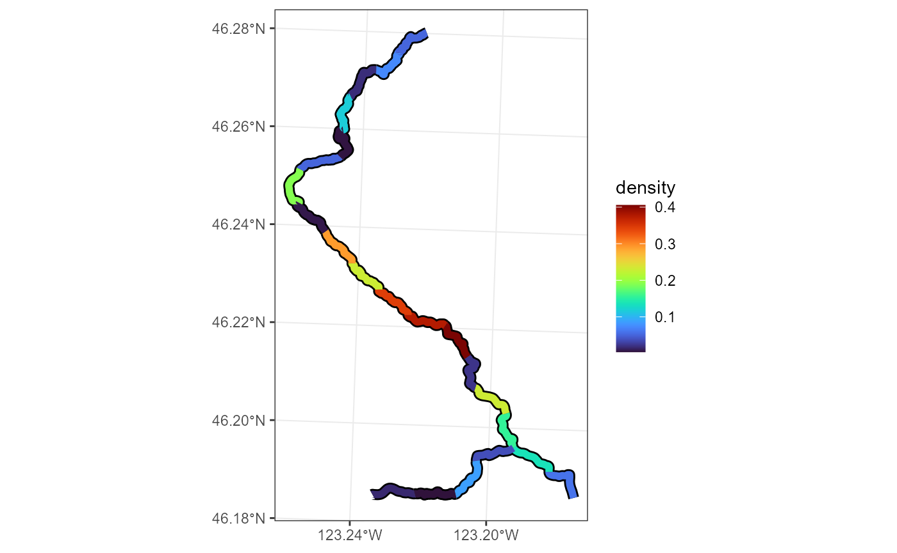
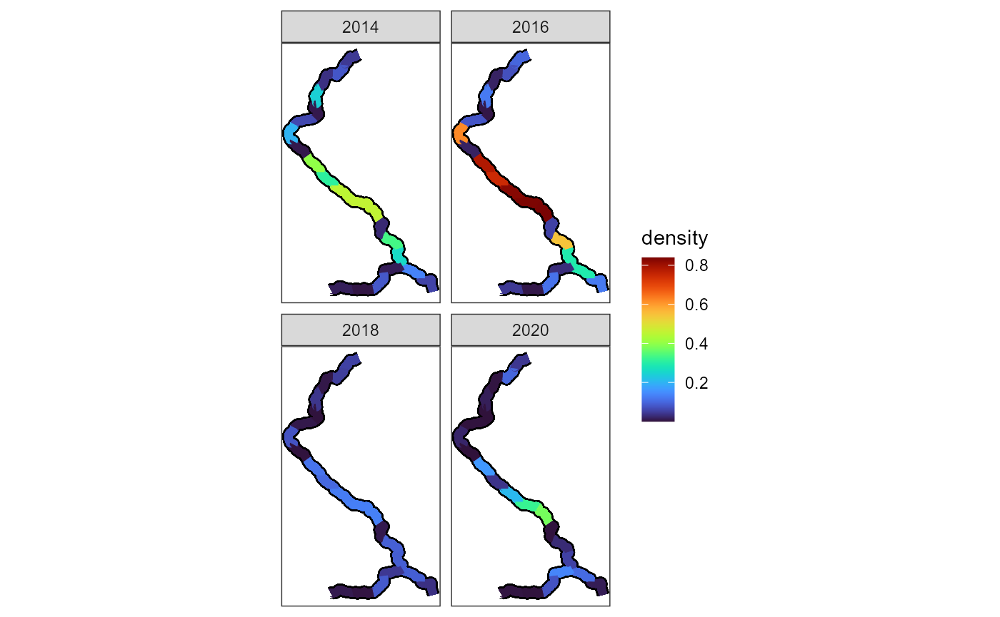

Fitting a VAST Model
model_fitting.Rmd
library(StreamVAST)
library(VAST)
#> Loading required package: TMB
#> Loading required package: FishStatsUtils
#> Loading required package: units
#> udunits database from C:/Users/harj3477/AppData/Local/R/win-library/4.2/units/share/udunits/udunits2.xml
#> ###########################################################################################
#> Loading package VAST version 3.10.0
#> For information and examples, please see http://github.com/james-thorson/VAST/
#> ###########################################################################################
library(sf)
#> Linking to GEOS 3.9.1, GDAL 3.4.3, PROJ 7.2.1; sf_use_s2() is TRUE
library(ggplot2)
library(sfnetworks)Fitting a VAST Model to Stream Network Data
This is the second chapter explaining how to use the functions in the StreamVAST package. For information on how to prepare and format data, please refer to the previous chapter Preparing a Stream Network
In the previous chapter, we imported data for steelhead salmon redds in the Mill Creek watershed, in Washington State. The two most important data objects are a data frame with the dates and locations of redds, and an sf object with LINESTRINGS defining the different segments of the network. A third object, the set of survey tracks is also useful. Future versions of this package will make use of S3 classes to streamline the tracking of these objects.
head(Mill.data)
#> X Year Day Reach Effort Redds STRM_NAME root parent parent.distance
#> 1 1 2013 64 1 2465.601 0 Mill Creek TRUE NA NA
#> 2 2 2013 64 2 3499.699 0 Mill Creek FALSE 1 3499.699
#> 3 3 2013 64 3 3354.350 0 Mill Creek FALSE 2 3427.024
#> 4 4 2013 64 4 3354.350 0 Mill Creek FALSE 3 3354.350
#> 5 5 2013 78 1 2465.601 0 Mill Creek TRUE NA NA
#> 6 6 2013 78 2 3499.699 0 Mill Creek FALSE 1 3499.699
print(Mill.reaches,n = 4)
#> Simple feature collection with 22 features and 7 fields
#> Geometry type: LINESTRING
#> Dimension: XY
#> Bounding box: xmin: 941970.7 ymin: 322499 xmax: 963147.4 ymax: 357159.5
#> Projected CRS: NAD83 / Washington South (ftUS)
#> First 4 features:
#> from to reachid STRM_NA root parent prnt_ds
#> 1 1 2 1 Mill Creek 1 NA NA
#> 2 2 3 2 Mill Creek 0 1 3499.699
#> 3 3 4 3 Mill Creek 0 2 3427.024
#> 4 4 5 4 Mill Creek 0 3 3354.350
#> geometry
#> 1 LINESTRING (963147.4 322499...
#> 2 LINESTRING (961311.9 324437...
#> 3 LINESTRING (958655.6 326211...
#> 4 LINESTRING (958123.2 328790...Additional formatting for VAST
There are a few more minor formatting tasks that need to be completed before we can fit a model. We need to draw information from Mill.reaches to add an “Area” column that tracks the total area in each reach, separate from the “Effort”. We will also take this opportunity to convert units from feet into km. The date will also be converted into a variety of formats (statistical week, Month) that will be useful later. The objects are returned as elements of a list. This function also produces a map of the spatial frame and the data coverage provided by the surveys that can be useful as a diagnostic check.
Mill.list<-FormatStreamData(counts = Mill.data,reaches = Mill.reaches,surveys = Mill.surveys,unit.conv = .0003048)
Redd.data<-Mill.list[[1]]
Reach.data<-Mill.list[[2]]
Survey.data<-Mill.list[[3]]
vast.input0<-Mill.list[[4]]
vast.network<-Mill.list[[5]]
vast.networkLL<-Mill.list[[6]]We also need to produce a set of auxiliary data frames that VAST will use to determine the spatial relationships, and each of these objects requires a very specific format with specific columns and names. These are returned as elements 4-6 of the list. The object “vast.input0” requires Lon and Lat coordinates (from the midpoint of each reach), a column named “child_i” which is equivalent to the reach id, and a column for “Area_km2”, which is equivalent the Area calculated above (note that we are treating stream lengths as if they are areas). We will need to further modify this object later, after choosing a temporal resolution. “Vast.network” and “vast.network.LL” are nearly identical, except for one having Lon and Lat columns. Both require columns for “child_s” which is the reach id, “parent_s” which is the id of the parent, and “dist_s” which is what we have been calling “parent.distance”. Note that for the root, “parent_s” must be set to 0, and “dist_s” must be set to Inf.
Choosing a temporal resolution
Depending on the system being modeled, a variety of temporal resolutions are possible. Therefore, we will need one additional formatting step, provided by MakeVASTData. For this example, we will set the temporal resolution to one month, and will cover the 5 months from Feb. to June. We will also pad the ends of the data set with zeros, to mark the ends of the season.
Redd.data.vast.list<-MakeVASTData(data = Redd.data,reachdata = Reach.data,countname = "Redds",Time = "Biweek",
startdate = "2013-02-01",enddate = "2022-06-30",padzero = T)
Redd.data.vast<-Redd.data.vast.list[[1]]
time.table<-Redd.data.vast.list[[2]]
vast.input<-vast.input0[match(Redd.data.vast$Reach,vast.input0$child_i),]This function returns a list with two elements. The first is a data frame that contains everything we will need for VAST.This data frame has three important additions. First, the temporal element has been converted into a generic “Time” period that runs in sequence. It also includes two columns “Original” and “Dummy”. The Original column identifies actual data points, while the Dummy column identifies time periods or reaches for which no data is available, but that we would like the model to output a prediction.
The second element of the list is a table that is useful for relating the time period back to it’s normal calendar date. The last step is that vast.input must have a number of rows equal to Redd.data.vast, so we will pull from vast.input0 to make the full version.
An example in VAST
From this point, we will use VAST functions to setup and run the model, and the example code here should be used as a guide. The user is advised to review the documentation for VAST, which contains extensive options for how to customize your model. Future versions of StreamVAST may include wrapper functions that automatically choose sensible options, but for now users can use the code in this document as a model. The first step is to make a settings object.
settings <- make_settings(Region="stream_network",
zone=10,
purpose = "index2",
fine_scale=F,
n_x = nrow(Reach.data),
FieldConfig = c("Omega1"= 1, "Epsilon1" = 1, "Omega2" = 0, "Epsilon2" = 0),
RhoConfig = c("Beta1" = 2, "Epsilon1" = 2, "Beta2" = 2, "Epsilon2" = 0),
OverdispersionConfig = c("Eta1" = 0, "Eta2" = 0),
ObsModel = c(7, 0),
bias.correct = T,
use_anisotropy = F)
settings$Method<-"Stream_network"
settings$grid_size_km<-mean(Reach.data$Length)It is important to specify that Region = “stream_network”, and to set n_x equal tot he number of reaches. The zone is the UTM time zone, and purpose = “index2” specifies that our goal is abundance or density prediction. FieldConfig is turns various components of the model on or off (the example removes several terms for simplicity and stability), and RhoConfig specifies the type autocorrelation (random-walk in this case). We are not modeling the overdispersion, so these settings are set to zero. ObsModel controls the distributions and link functions in the model, with the current setting indicating a Poisson count model with zero inflation. Anisotropy and fine_scale should be turned off. Please see the VAST documentation for details.
It is also necessary to manually set the method to “Stream_network” and to calculate a mean size for the prediction frame.
For this example, we will not use any covariates, but this is the point where you would set up a covariate data set as well. See the VAST documentation for details.
Next, we can run the model, using “fit_model” from the VAST package. While there are many inputs, the preceding steps have made everything available. Note that some of the values should be converted to units for the function. Also, VAST will write a number of text files to you active working directory.
vast.model<- fit_model("settings" = settings,
Lat_i = Redd.data.vast$Lat,
Lon_i = Redd.data.vast$Lon,
t_i = as.integer(Redd.data.vast$Time),
b_i = as_units(Redd.data.vast$Redds,"count"),
a_i = as_units(Redd.data.vast$Effort,"km"),
test_fit = FALSE,
PredTF_i=Redd.data.vast$dummy,
input_grid=vast.input,
Network_sz=vast.network,
Network_sz_LL=vast.networkLL,
newtonsteps = 3,
Aniso=F,
getsd=T,
getHessian=T,
max_cells=nrow(Redd.data.vast),
Options = c('treat_nonencounter_as_zero' = F))Preliminary checks and Troubleshooting
The object “vast.model” contains many pieces, several of which are useful to determine if the algorithm has run successfully. A basic check of the parameter estimates is often advisable.
vast.model$parameter_estimates$Convergence_check
#> [1] "There is no evidence that the model is not converged"
vast.model$parameter_estimates$par
#> L_omega1_z L_epsilon1_z L_beta1_z logkappa1 Beta_mean1_c L_beta2_z
#> 3.5656370 0.4261484 0.6597098 -0.2753906 -1.2886024 1.2725911
#> Beta_mean2_c
#> -3.2439917
vast.model$parameter_estimates$number_of_coefficients
#> Total Fixed Random
#> 2669 7 2662If your model is not converging, experiment with by making the settings. It is often productive to begin with a simple model (by inputting 0s in FieldConfig or RhoConfig) and then to gradually increase the complexity. Refer to the VAST documentation for specifics.
The predictions from the fitted VAST model can be quickly extracted using a helper function VASTpreds. This function will format the predictions into a data frame, and provide the density and count estimates for each reach at each time period. It also provides upper and lower 90% confidence bounds, based on samples drawn from the posterior distribution. A second functon can produce maps from the output.
preds<-VASTpreds(model = vast.model,time.table=time.table)
plotPredictionMap(data = preds,mapvar = "density",reaches = Reach.data,
reach.names = "reachid",make.labels = F,xaxis.breaks = c(-123.24,-123.20))
These maps can also be faceted by year, month, etc.
plotPredictionMap(data = subset(preds,Year%in%c(2014,2016,2018,2020)),mapvar = "density",reaches = Reach.data,
facet = "Year",reach.names = "reachid",make.labels = F,xaxis.breaks = 0,yaxis.breaks = 0)
Vast is also compatible with the DHARMa package, which provides scaled residual estimates for hierarchical models, and is a good first step to assessing model fit. Note that due to compatibility issues, you must have a copy of the vast.model object named “fit”.

In the final chapter, StreamVAST provides some functions that allow users to conveniently extract predictions or residuals from the VAST model, further explore model fit, generate some derived population metrics, and demonstrates some plotting functions that may be useful to evaluate or present the results of a model.